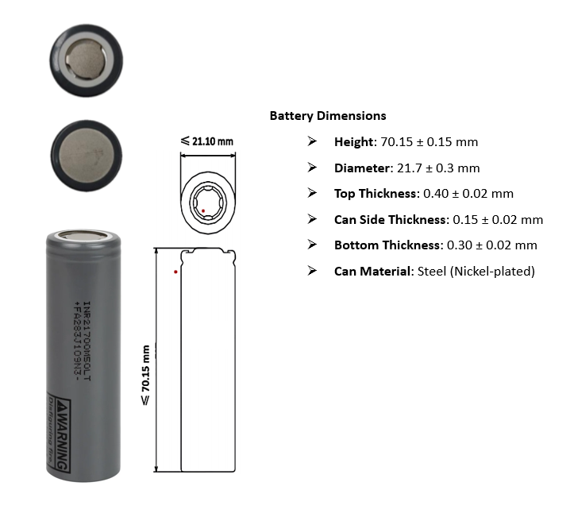
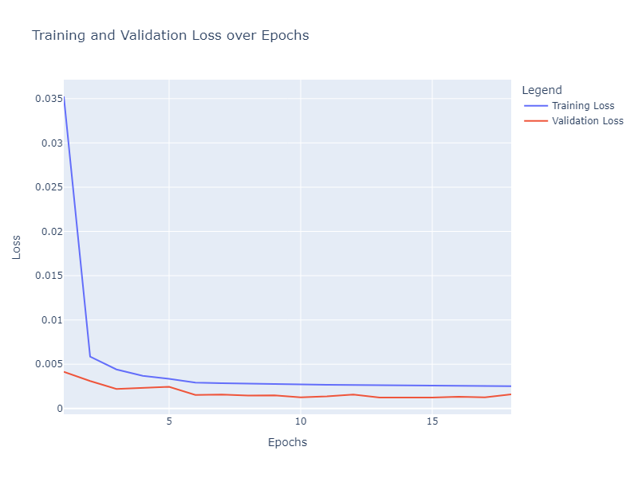
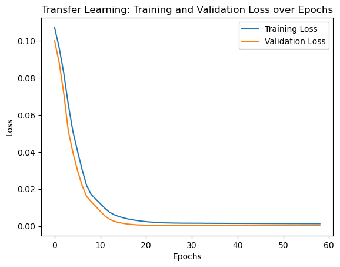
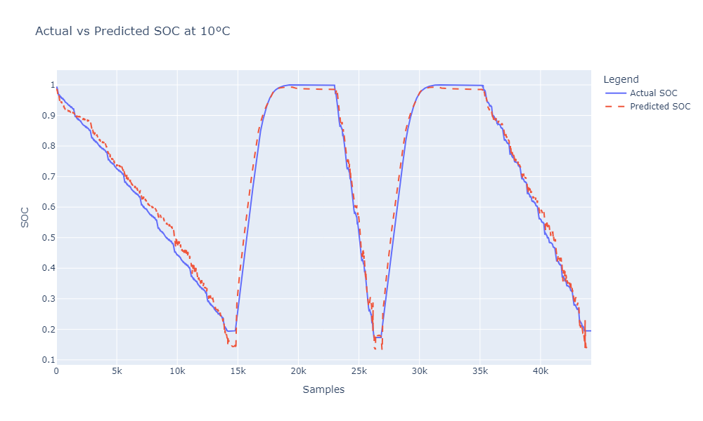

📈 Visualizations from My Work
1. Battery SOC and Temperature Analysis

This image provides an overview of the battery's state of charge (SOC) and its temperature behavior under different conditions.
View Project on GitHub2. LGM50LT Battery Analysis
An in-depth analysis of the LGM50LT battery type, showcasing specifications and performance attributes used in various models.
3. Model Loss Curve
This plot represents the training loss over time, demonstrating how the model's performance improves during training iterations.
4. Transfer Learning Loss Curve
Visualizing the reduction in loss when applying transfer learning techniques, which significantly improved training speed and accuracy.
5. SOC Predictions at +10 Degrees
A predictive analysis showing the SOC performance at an ambient temperature of +10 degrees Celsius.
6. SOC Predictions at 25 Degrees

This plot displays SOC predictions at 25 degrees Celsius, showcasing how temperature variations can affect battery performance.